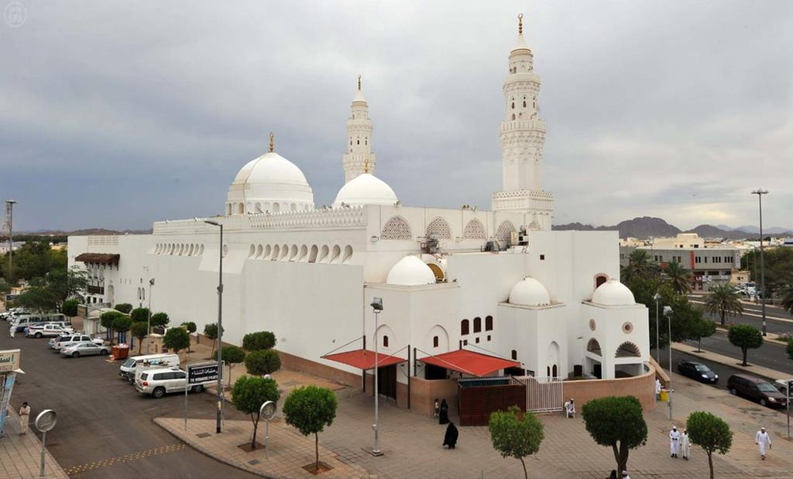
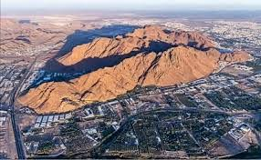
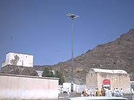
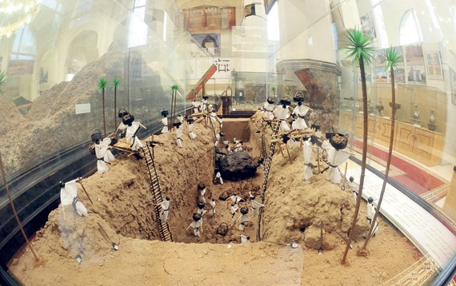

Discover Madina
Explore the beautiful city of Madina through its various attractions
Religious Sites
Sacred places of worship and spiritual significance
Historical Sites
Places of rich Islamic and cultural heritage
Tourist Attractions
Modern and cultural points of interest

Quba Mosque
The first mosque built in Islamic history
5.2 km from Al-Masjid an-Nabawi

Qiblatain Mosque
Famous for the changing of the Qibla direction
4.5 km from Al-Masjid an-Nabawi

Mount Uhud
Site of the historic Battle of Uhud
3.8 km from Al-Masjid an-Nabawi

Battle of Trench Site
Location of the historic Battle of the Trench
7.1 km from Al-Masjid an-Nabawi

Al Noor Mall
Modern shopping complex with various attractions
2.3 km from Al-Masjid an-Nabawi

Prophet's Museum
Exhibition of Islamic heritage and artifacts
0.5 km from Al-Masjid an-Nabawi